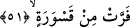

51. Arslandan kaçan.
Âyette yer alan “kasvera” aslan demektir. Çünkü vahşi eşşekler aslanı gördüklerinde
var güçleriyle kaçarlar. Kasvera kelimesi kahr ve galebe çalmak anlamında olan “kısr”
kökünden türemiştir. Aslanın bu ismi alması ormandaki diğer vahşi hayvanlara üstün
olmasından ve onları kendi gücü altında ezmesinden dolayıdır.
İbn Abbas (r.a.)’ın ifâdesine göre “kasvera” Habeş dilinde aslan anlamınadır.
Bâzılarına göre “kasvera” yaban eşşeklerini avlayan okçu grubun adıdır.
Kâşifî demiştir ki, aslandan, avcıdan, tuzak ipinden, okçudan veya çeşitli seslerden
ürkerek kaçtılar.
Kâfirler, Kur’an’dan yüz çevirme içinde bulunan öğütleri dinlememe ve ondan köşe
bucak kaçma noktasında kendilerini korkutan şeylerden var güçleriyle kaçan eşşeklere
benzetilmişlerdir. Yâni nasıl ki yaban eşekleri onlardan kaçar, bunlar da Kur’ân’ı
dinlemekten kaçarlar. Zira dinleyecek kulağa, öğüt kabul edecek kalbe sâhip değildirler.
Mesnevî’de işâret edildiği gibi:
Bu kavim nerede onlara haber vermek nerede?
Cansız olandan kim can bekler?
Eğri büğrü görüşler, eski anlayışlar
Düşünceye yüz türlü kötü hayal getirirler
Sır, sırrı bilenden başkasına eş olmaz
İnkârcının kulağında bulunan sır, sır değildir.
Onların bu benzetilmelerinde kınanmış oldukları ve durumlarının ne kadar çirkin
olduğunun vurgulandığı gâyet açıktır. Bir başka ifâdeyle kâfirlerin yaban eşşeklerine
benzetilmeleri aynı zamanda aptallıklarına bir işârettir. Yaban eşşeklerinin herhangi bir
şeyden korktuklarında kaçtıkları gibi bir kaçış ve koşmayı bir başka hayvanda görmek
mümkün değildir. Herhangi bir kimse birisini ağır biçimde küçümsemek ve en rezil bir
şekilde kötülemek isterse onu eşşeğe benzetir.
Rivâyet edilir ki âlimlerden birisi büyük bir câmide halka vaaz ve nasîhat ediyordu.
Etrafında kalabalık bir cemâat vardı. Eşşeğini kaybeden ahmak birisi bunu gördü ve
vâize: “Ben bir eşşek kaybettim, cemâate bir soruver, belki aralarından birisi onu
görmüştür” diye bağırdı. Vâiz ona:”Otur yerine ben onu sana göstereyim” dedi. Adam
oturdu, birden vaaz dinlemekte olanlardan birisi yerinden kalktı ve dışarı çıkmaya
koyuldu. Vaiz o adama: “Al bunu çünkü o senin eşşeğindir” dedi. Belli ki o vâiz bu
sözü, üzerinde durduğumuz âyetten esinlenerek söylemiştir. Çünkü yerinden kalkıp giden
kişi melik ve allâm olan Allah Teâlâ’nın öğüdünden kaçıyordu.